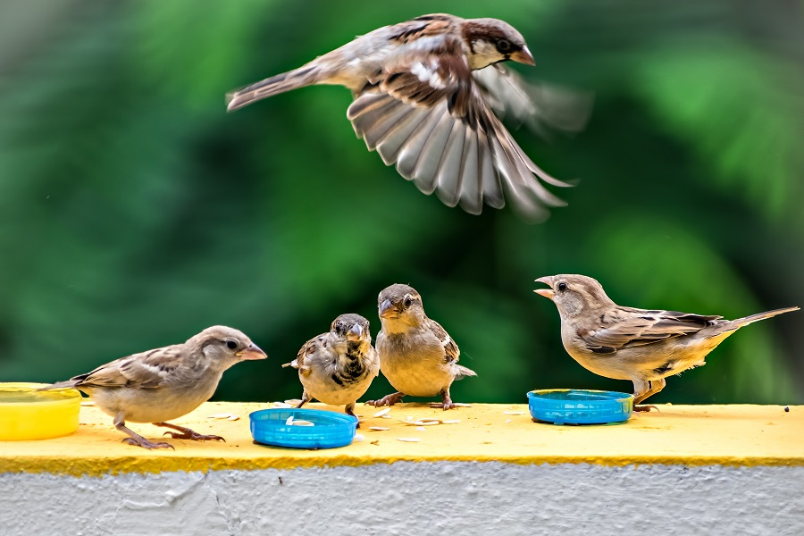
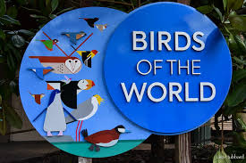
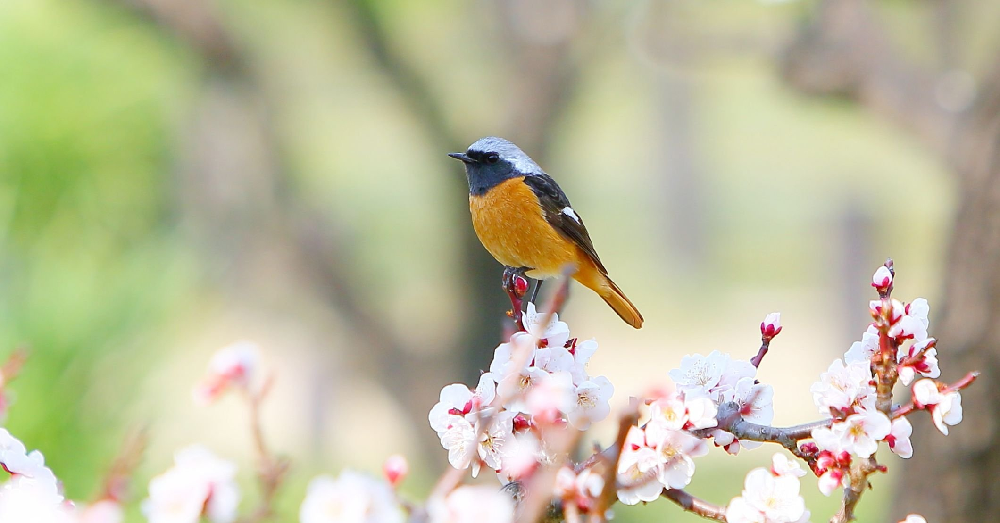
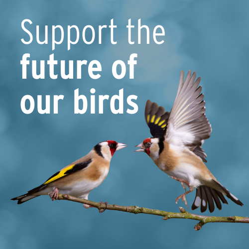
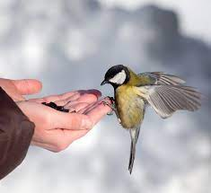

| Our Mission | Explore the World of Birds | Discover Birding Hotspots |
|---|---|---|
|  |  |  |
| Wings of the World is dedicated to showcasing the incredible diversity of bird species found across the globe. Through informative profiles, stunning photography, and engaging content, we aim to foster a greater understanding of avian biology, behavior, and conservation. | Embark on a virtual journey to discover the fascinating world of birds. Browse through our extensive collection of bird profiles, each offering insights into the unique habitats, behaviors, and conservation status of species from every corner of the globe. Whether you're a seasoned birder or a curious newcomer, there's always something new to learn and explore. | Ready to spread your wings and embark on your own birdwatching adventure? Our Birding Hotspots section features guides to some of the most iconic birding destinations worldwide. Learn about the best times to visit, must-see species, and insider tips from seasoned birdwatchers. Whether you're planning a trip to the tropical jungles of Costa Rica or the vast savannas of Africa, we've got you covered. |
| Track Bird Migrations | Join Our Community | Get Involved in Conservation |
|---|---|---|
|  |  | |
| Follow the extraordinary journeys of birds as they traverse continents and cross oceans in search of food, breeding grounds, and warmer climates. Our Migration Tracker provides real-time updates on major migration routes, allowing you to witness the awe-inspiring spectacle of avian migration from the comfort of your own home. | Connect with fellow bird enthusiasts from around the world in our vibrant community forums. Share your birding experiences, swap stories and tips, and participate in lively discussions on all things avian. Whether you're a backyard birdwatcher or a seasoned ornithologist, you'll find a welcoming community of like-minded individuals eager to share their passion for birds. | At Wings of the World, we believe in the importance of protecting our feathered friends and their habitats for future generations to enjoy. Explore our Conservation Corner to learn about ongoing conservation efforts, success stories, and ways you can make a difference in bird conservation. Together, we can work towards a brighter future for birds and the planet. |